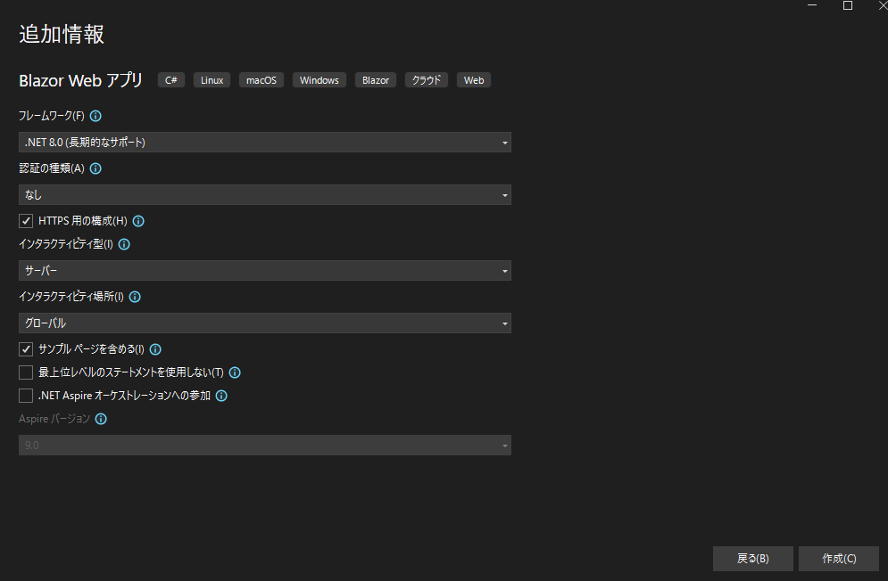

.NET 8 からの Blazor Web App テンプレートには、作成ウィザードで Interactivity render mode（どの相互運用モードを有効にするか）と Interactivity location（どこにそのモードを適用するか）という2つの重要な設定があります。

上記のスクショはその作成ウィザードです。日本語化されているためなんだか妙な感じですが、「インタラクティビティ型」が「Interactivity render mode」に、「インタラクティビティ場所」が「Interactivity location」に相当します。単純に直訳しただけじゃん・・・。
この記事では、その概要と仕組み、選択肢ごとの動作や注意点・実装例をまとめます。
Blazor Web App（.NET 8 以降）では、各 Razor コンポーネントが「レンダーモード」を持ちます。これにより「どこで（サーバー／クライアント）」「どの方式で（静的／対話）」描画・イベント処理するかを柔軟に切り替えられます。
| モード | 説明 | レンダー場所 | インタラクティブ |
|---|---|---|---|
| Static Server | 静的 SSR（HTML をサーバーで描画して返すのみ） | サーバー | いいえ |
| Interactive Server | Blazor Server による対話的 SSR | サーバー | はい |
| Interactive WebAssembly | Blazor WebAssembly によるクライアント側描画（CSR） | クライアント | はい |
| Interactive Auto | 初回は Server、以降は WASM（バンドル取得後に CSR） | サーバー→クライアント | はい |
なお、対話コンポーネントでは 既定でプレレンダリング（prerendering）有効です。必要ならオフにもできます（一部の例外やWASMのみの構成など、手動調整が必要な場合もあります）。
ウィザードで None / Server / WebAssembly / Auto を選びます。これは「プロジェクトにどの相互運用モードの“配線”を入れるか」を決めます。生成されるコードやサービス登録・プロジェクト構成が変わります。
AddInteractiveServerComponents() と AddInteractiveServerRenderMode() が組み込まれ、Blazor Server の相互運用が有効化されます。AddInteractiveWebAssemblyComponents() と AddInteractiveWebAssemblyRenderMode() が入り、クライアント用の .Client プロジェクトがテンプレートで自動生成されます。AddInteractiveServer* と AddInteractiveWebAssembly* の双方）。CLI では
--interactivity（-int）で同等の設定が可能です。
Global と Per page/component の 2 択です。これは「レンダーモードの“適用範囲”」を意味します。
Components/App.razor の HeadOutlet と Routes に @rendermode がセットされ、配下のページ（ルーティングされるページ）が全て同一のレンダーモードとなります。@rendermode InteractiveServer などを明示して対話化します。CLI では --all-interactive オプションで切り替えます。なお App（ルートコンポーネント）自体には
@rendermodeを直接付与できませんが、通常はRoutesやHeadOutletなどApp配下のルート要素に指定します（Visual Studio 2022/.NET 8 テンプレートの既定通り）。
ここで言う 「対話化」 とは、レンダリング後もコンポーネントを生かして、ブラウザの DOM イベント（クリック、入力、変更など）と C# の処理が連携する状態を指します。
という形でイベント処理・状態管理を継続します。
以下、何をしたら「対話化」になるのかを、具体的な実装単位でまとめます。
宣言的に
@rendermodeを付けるだけで、そのページ／コンポーネントが対話化されます。Program.cs 側には対応するモードのサービス登録が必要です。
@page "/counter"
@rendermode InteractiveServer <!-- ← これが“対話化”の指定 -->
<h1>Counter</h1>
<p>Count: @count</p>
<button class="btn btn-primary" @onclick="Increment">Add</button>
@code {
int count = 0;
void Increment() => count++;
}// Program.cs（サーバー）
builder.Services.AddRazorComponents()
.AddInteractiveServerComponents();
app.MapRazorComponents<App>()
.AddInteractiveServerRenderMode();@rendermode を外すと、このページは Static SSR（静的 HTML 返却のみ）になり、@onclick などの C# 側イベントは動作しません（フォームの通常送信やリンク遷移のみ動作）。<!-- ページ自体は静的SSRのまま、ボタン部分だけ対話化 -->
<InteractivePanel @rendermode="InteractiveServer" />
@rendermodeはページ定義（上部）にもコンポーネント呼び出し（インスタンス）にも書けます。前者は静的インスタンス、後者は任意のモードを個別に割り当て可能です。
Routes と HeadOutlet に
@rendermodeを付けると、ルーティングされるページ全体が対話化されます（Interactivity location: Global がこれ）。Appそのものには指定できません。
<!-- Components/App.razor -->
<HeadOutlet @rendermode="InteractiveServer" />
<Routes @rendermode="InteractiveServer" />レイアウト（
MainLayout）にはレンダーモードを付けられないため、レイアウト配下を全部対話にしたい場合は Global で Routes に付与するのが定石です。
.Client プロジェクトに置くのが推奨ですが、.Server 側からも参照可能です。@rendermode InteractiveWebAssembly などでマークされたコンポーネントは、自動的にWASMバンドルに含まれます（テンプレート既定通り構成するのが安全です）。// Program.cs（サーバー）
builder.Services.AddRazorComponents()
.AddInteractiveWebAssemblyComponents();
app.MapRazorComponents<App>()
.AddInteractiveWebAssemblyRenderMode();対話コンポーネントは 既定でプレレンダリング有効です。初期描画だけ SSR し、その後に回線確立（Server）や WASM 起動（Client）で“水和（再接続）”します。必要に応じてオフにできます。
@rendermode @(new InteractiveServerRenderMode(prerender: false))RenderFragment）を、対話コンポーネントにそのまま渡すとエラーに。親子を分けて シリアライズ可能な引数に揃える等の工夫が必要です（.NET 8時点でも、非シリアライズなパラメータを子コンポーネントに渡すとランタイムエラーになります）。AddInteractiveServerComponents() / AddInteractiveServerRenderMode()AddInteractiveWebAssemblyComponents() / AddInteractiveWebAssemblyRenderMode()Components/App.razor の Routes / HeadOutlet に @rendermode。@rendermode。@rendermode で“イベントが動くコンポーネント”にすること。@rendermode を 「全体（Global）」に付けるか、「必要なページ／コンポーネントだけ（Per）」に付けるかの違いです。Server を有効にした場合（例）：
// Program.cs（サーバー）
builder.Services.AddRazorComponents()
.AddInteractiveServerComponents();
app.MapRazorComponents<App>()
.AddInteractiveServerRenderMode();WASM を有効にした場合（例）：
// Program.cs（サーバー）
builder.Services.AddRazorComponents()
.AddInteractiveWebAssemblyComponents();
app.MapRazorComponents<App>()
.AddInteractiveWebAssemblyRenderMode();
// テンプレートでは .Client プロジェクトも生成されるAuto を有効にした場合（例）：
builder.Services.AddRazorComponents()
.AddInteractiveServerComponents()
.AddInteractiveWebAssemblyComponents();
app.MapRazorComponents<App>()
.AddInteractiveServerRenderMode()
.AddInteractiveWebAssemblyRenderMode();（上の構成は公式ガイドとテンプレートの既定パターンに準拠）
<!-- Components/App.razor -->
<HeadOutlet @rendermode="InteractiveServer" />
<Routes @rendermode="InteractiveServer" />これでルーティングされるページはすべて対話化されます。
@page "/counter"
@rendermode InteractiveServer
<h1>Counter</h1>
<button class="btn btn-primary" @onclick="Increment">Add</button>
@code {
int count = 0;
void Increment() => count++;
}このページだけが対話的になり、他のページは静的 SSR のままです。
<!-- Components/App.razor -->
<HeadOutlet @rendermode="InteractiveServer" />
<Routes @rendermode="InteractiveServer" />// Program.cs
builder.Services.AddRazorComponents().AddInteractiveServerComponents();
app.MapRazorComponents<App>().AddInteractiveServerRenderMode();（ルーター経由のページにモードが伝播。App 自体に指定できない点に注意）
@page "/chart"
@rendermode InteractiveWebAssembly// Program.cs（サーバー）
builder.Services.AddRazorComponents()
.AddInteractiveWebAssemblyComponents();
app.MapRazorComponents<App>()
.AddInteractiveWebAssemblyRenderMode();
// .Client プロジェクトを含め、対象コンポーネントは Client 側でビルド（WASM コンポーネントは Client プロジェクトに置く）
Auto を使うと最初はサーバー実行、以降はWASM 実行に切り替わるため、DB アクセス等は抽象化して WASM では API 経由に統一すると破綻しにくいです。Server側の状態がWASM側に自動で引き継がれるわけではありません。
具体的なユースケースを考えてみます。
@rendermode InteractiveServer を付与。| ユースケース | Render Mode | Location |
|---|---|---|
| 社内システム | Interactive Server | Global |
| パブリックサイト | Static + Interactive Server (一部) | Per page/component |
| Web アプリ | Interactive Auto | Global |
| PWA | Interactive WASM | Global |
@rendermode @(new InteractiveServerRenderMode(prerender:false)) のように切替可能です。--interactivity --all-interactive が対応します（.NET 8以降、blazor テンプレートはWeb App専用）。 dotnet new blazor \
--interactivity Server|WebAssembly|Auto|None \
--all-interactive true|false（--interactivity がモード、--all-interactive が Global/Per の切り替え）
なかなか選択肢が多くてﾒﾝﾄﾞｸｻｲ大変ですが、要点は以下の通りです。
Program.cs のサービス／エンドポイント登録や .Client プロジェクトの有無に関わります。Routes／HeadOutlet に @rendermode を付与、Per page/component は必要なページやコンポーネントだけに @rendermode を付けます。